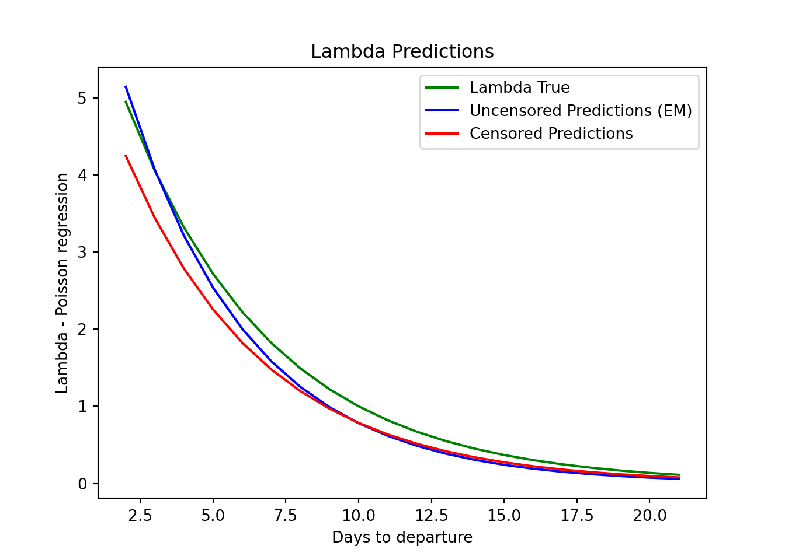

What if you want to run a regression to estimate the coefficients and retrieve the data generating process of some data BUT you are in a scenario with censored data? How does that affect my estimation? Can I do better?
In short, you have censored data when some observation is unobserved or constrained because of some specific reason which is natural and unavoidable.
For instance, in survival analysis, if the subject is not yet dead (luckily) you can not observe the time of death yet and hence you don't know if he will die tomorrow or in two years. You can't observe yet the death date.
For goods with limited demand, once you deplete your stock, by definition you can't sell more and you can't observe all the demand that you would have if more items were able to be sold. Or an Airline , when selling seats, can't observe the full demand after all the seats have been sold, maybe more people were willing to flight.
We will simulate an example of the latest case, for an airline with simple toy data.
import numpy as np
import statsmodels.api as sm
from scipy.stats import poisson
import matplotlib.pyplot as plt
We create some fake data, where seats sold are generated from a poisson distribution, with an intercept (2) and a coefficient related to how many days are left to the departure (-0.2), the further from the departure, the less seats are sold.
What we also do, is that on the last date, we constrain the demand. We don't get the full seats that would have been sold under a poisson distribution but the amount minus 3. Only ourselves know that because we want to tweak the data. In real life we would see data similar to the one generated and we couldn't see the actual sales that would have been present in a complete poisson generating process (that actually is how the tickets are sold in our example)
# Step 1: Generate data
np.random.seed(100)
n_samples = 20
n_features = 1
substract_sales = 3
# Generate features
X = np.random.normal(size=(n_samples, n_features))
X = np.array(range(n_samples+1, 1, -1))
X = sm.add_constant(X) # Add intercept term
# True coefficients
beta_true = np.array([2, -0.2])
# Generate Poisson-distributed target values
linear_pred = np.dot(X, beta_true)
lambda_true = np.exp(linear_pred)
y = np.random.poisson(lambda_true)
# y
# Right-censoring threshold in the last date (when the fare is closed)
censor_threshold = np.concatenate([(y+1)[:-1],np.array([y[-1]-substract_sales])])
y_censored = np.where(y > censor_threshold, censor_threshold, y)
is_censored = (y > censor_threshold)
Maybe it's easier to visualize.
The green curve is the actual lambda parameter for each data, based on the intercept and the real coefficient multiplied by days to departure.
The blue dots are the actual data points we see for all dates except from the last one.
The grey dot is the data we should see if there was no limit of how many seats to sell, following the poisson distribution.
The red dot is the actual data point we have, the last day the airline sold all the remaining seats and couldn't fulfill the true demand and hence we see lower sales than the ones generated by the poisson distribution.
# Plot the data
plt.xlabel('Days to departure')
plt.ylabel('Bookings')
plt.title('Data Plot')
plt.plot(X[:-1, 1], y[:-1], 'o')
plt.plot(X[:, 1], lambda_true, label='Lambda True', color="green")
# plt.plot(X[:, 1], lambda_est, label='Lambda Estimated')
plt.scatter(X[-1, 1], y[-1:], color="grey", label="Real unseen demand" )
plt.scatter(X[-1, 1], y[-1:]-substract_sales, color='red', label='Constrained')
plt.legend()
plt.show()

First we estimate the parameters using a poisson regression. We assume the data follows a poisson process and we don't do anything to manage the constrained data.
The results are kind of ok, we get some closeness to the true parameters but it is clearly biased.
model_censored = sm.GLM(y_censored, X, family=sm.families.Poisson())
results_censored = model_censored.fit()
print(f'Estimated Censored coefficients: {results_censored.params}')
## Estimated Censored coefficients: [ 1.86976922 -0.21124541]
OK, here is our alternative. What we can do, a bit more sophisticated, is to apply EM algorithm, which is a iterative process, to estimate the coefficients of the poisson regression, including the knowledge we have, that there might be constrained data.
# Step 2: Initialize parameters
beta_est = np.zeros(n_features + 1)
tol = 1e-4
max_iter = 1000
for iteration in range(max_iter):
# Step 3: E-step
# Estimate the expected values of censored data
lambda_est = np.exp(np.dot(X, beta_est))
expected_y = np.where(
is_censored,
(censor_threshold + 1) / (1 - poisson.cdf(censor_threshold, lambda_est)),
y_censored
)
# Ensure expected_y values are valid
expected_y = np.nan_to_num(expected_y, nan=np.mean(y_censored), posinf=np.max(y_censored), neginf=0)
# Step 4: M-step
# Update parameter estimates using Poisson regression
model = sm.GLM(expected_y, X, family=sm.families.Poisson())
results = model.fit(method="lbfgs")
# results = model.fit_regularized(L1_wt=0, alpha=0.1)
new_beta_est = results.params
# Check convergence
if np.linalg.norm(new_beta_est - beta_est) < tol:
break
beta_est = new_beta_est
## <string>:7: RuntimeWarning: divide by zero encountered in divide
print(f'Estimated coefficients: {beta_est}')
## Estimated coefficients: [ 2.11015996 -0.23573144]
We can see our estimates are of course not perfect but the intercept is closer to the true parameter.
Let's visualize the results to have a clear intuition.
uncensored_predictions = results.predict(X)
censored_predictions = results_censored.predict(X)
Promising!
For the furthest dates we see a bias in both approaches, we are not doing better than the Poisson regression, but neither worse.
As we move closer the the departure, the EM algorithm predictions get closer and closer to the true lambdas, while the regular poisson regression continues it's biased trajectory.
The EM procedure adjusted the coefficients to better match the constrained data.
plt.plot(X[:, 1], lambda_true, label='Lambda True', color="green")
plt.plot(X[:, 1], uncensored_predictions, label='Uncensored Predictions (EM)', color="blue")
plt.plot(X[:, 1], censored_predictions, label='Censored Predictions', color="red")
plt.xlabel('Days to departure')
plt.ylabel('Lambda - Poisson regression')
plt.title('Lambda Predictions')
plt.legend()
plt.show()
